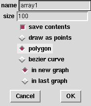
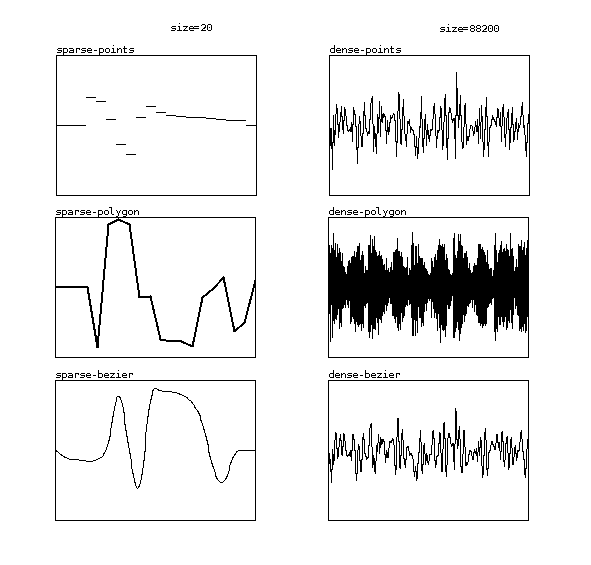
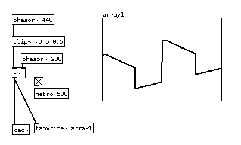
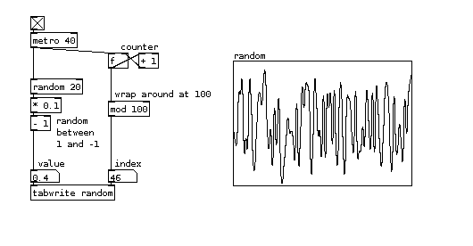
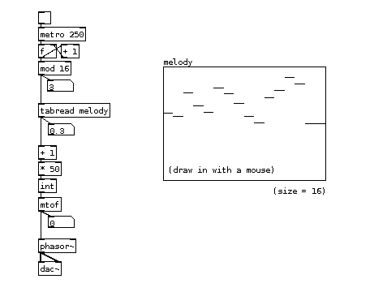
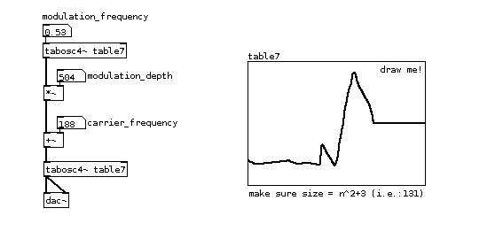
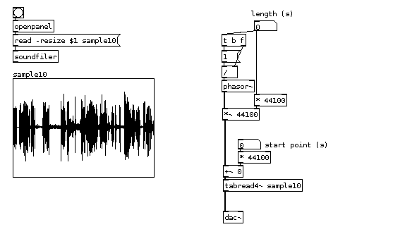

Arrays, Graphs and Tables
Often, we need a way to conveniently store large amounts of data and to be able to instantly access it. Pd uses Arrays for this purpose. An array can be thought of as a container in the computer's memory with neatly indexed drawers with data that can be looked up instantly. They are used for many purposes, including the loading of soundfiles into Pd.
Arrays are accessed by their Index number. These numbers are used to look up values stored in the array. So if we ask an array what is stored at index number "0", it will return the first value stored there. And if the array has 100 values stored in it, asking it for index number "99" will give the last value in the array.
Arrays are displayed on screen in Graphs. A graph plots out the data stored in the array using an X/Y format, meaning that the index numbers of the array are shown on the X (horizontal) axis, and the values stored at those index numbers are shown on the Y (vertical) axis. This graph is created automatically, whenever we create an array.
However, when we don't need to see the array on screen, we can hide it away inside a Table. A table is a subpatch which contains both the array and its graph. In this case, it is used with a creation argument which gives the name of the array. For example, if you create an object named [table mytablename], then inside the [table] object you will find an array named "mytablename" inside its own graph.
Creating an Array
To create a new array, choose "Array" from "Put" menu and a dialog appears:

Here the name and size of array can be defined. The name of the array should be unique and
The "save contents" button will cause Pd to save the contents of an array within the patch file. This is useful when it stores data that might be used each time the patch is opened, for example to modulate the frequency or amplitude of a sound. However, this is not recommended if soundfiles will be loaded into it, as the audio data will be stored as text information inside the Pd patch!
The next three options, "draw as points", "polygon" or "bezier curve", define how data will be visualized: as discreet points (horizontal lines), as cornered zigzagging connected lines or smoothed bezier-curved line:

The last option is whether to display the array "in new graph", or use an existing one ("in last graph"). Most often, each array will use its own, new graph. However, displaying multiple arrays in one graph can be a way of visually comparing information.
Using Arrays to Display Audio
Sometimes arrays can be used to display the waveform of sound signals. Using [tabwrite~], sound signals are recorded into table. Every time a [tabwrite~] receives a "bang" from the [metro] object, it will start recording (sampling) the incoming audio signal into the array, graphing it when it reaches the end of array:

In above example, [tabwrite~] is sent a "bang" every half second to continuously display the waveform produced from two [phasor~]s, and a [clip~] object.
Writing Data to an Array
Data can be put as values into tables too, simply by sending an index number (X-coordinate) and a value (Y-coordinate) to [tabwrite] (no tilde!) object:

In above example, for each index number (they are produced with a counter and start from beginning (0) with [mod 100] at 100) a random value between -1 and 1 is written to a table.
Reading Data from Arrays
Tables can be read (looked up) in two ways: to get discrete numbers, or to directly read them as audio waveforms. With [tabread] an index number is taken as an X-coordinate and value in the table (Y-coordinate) is output. In the following example an array is used in a repeating sequencer-like fashion as a simple rudimentary control for an sawtooth oscillator:

With [tabosc4~] table data is used as an oscillating waveform - like sinewave is used in sinewave oscillator [osc~] and sawtooth wave is used in [phasor~]:

In above example an oscillating waveform from table7 is used to modulate frequency of an oscillator that is using the same waveform to synthesize sound. Changing the table in realtime will influence the modulation and oscillation. Source for hours of fun!
Using Arrays to Play Back Samples
Another way to read data from a table is to play it as a sound recording - which usually is, especially if array is filled with data from a sound file. For this [soundfiler] object comes handy, as is shown in the following examples. In first, array is played using simple and straightforward [tabplay~] object, which offers flexibility of playing from a specific point for a specific length. Remember, digital sound recording is, simply put, high frequency measurements (sample rate, i.e.: 44.1kHz) of sound vibrations. In Pd, when soundfile is loaded into a table, every single measurement (sample) can be accessed. That is why, 44100 samples equals 1 second (in most cases).

Following to the aforementioned possibility of accessing individual samples within a sound recording that's been loaded into an array, a [tabread4~] object allows more computational flexibility. Below, [phasor~] object produces ramps (sawtooth wave) from 0 to 1 at the audio rate (commonly 44100 times in a second). If frequency of the [phasor~] oscilator is 1Hz, it will output a ramp from 0 to 1 in exactly one second. If multiplied by 44100 and sent to [tabread4~], it will read first 44100 indices (indexes) in a second and output the values as an audio signal - example below tries to demonstrates that with a twist or two:

First twist comes from an idea of changing the frequency of phasor, and this way slowing down the ramps. This would however shift the pitch of the sound - like changing speed of a vinyl record. This is prevented by multiplication with higher number of samples, which effectively turn the parameter into the length of a sample that is being looped instead of slowing it down. Looping is here because [phasor~] starts again at 0 after it has reached 1. The other twist is the starting point, which simply shifts the whole loop by adding number of samples (seconds multiplied by 44100).